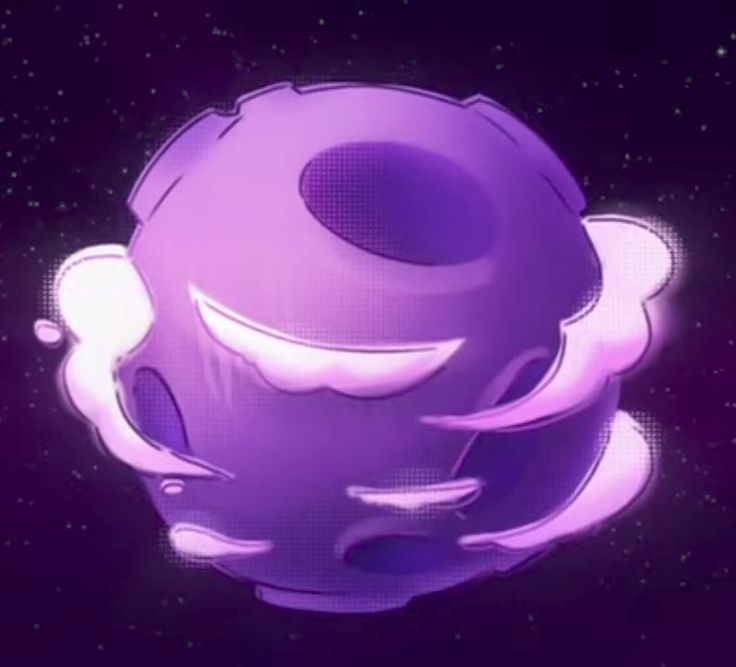
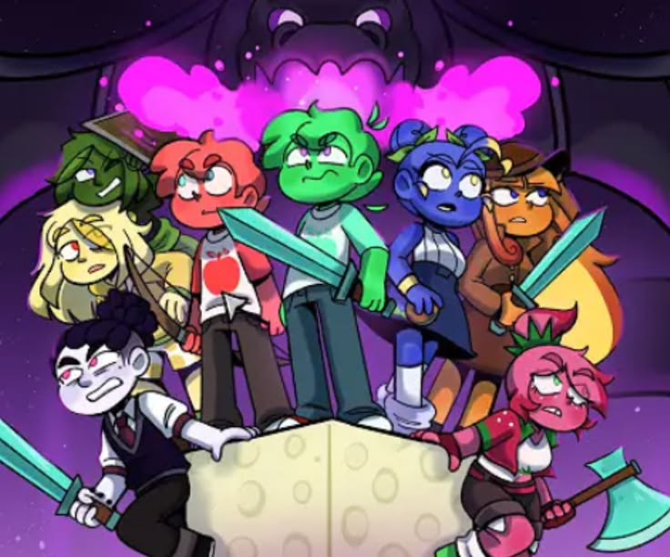
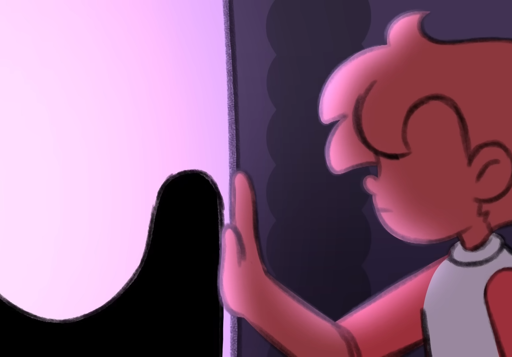

CIDADE
Por: Vitória Moura
O conceito da cidade apareceu pela primeira vez em 16 de março de 2024, no vídeo "REVELANDO O NOVO MISTÉRIO DO MORAJO". Em meio ao grande conflito que se passava no canal, Torajo decidiu que o melhor caminho a se seguir era a transparência com seu público, e decidiu mostrar todo o seu mundo, e como às pessoas que assistem seus vídeos são importantes para sua existência.
VERADE - PLANETA .✦ ݁˖
Por: Vitória Moura
O planeta no qual todas às histórias se passam se chama Verade, ele fica a cerca de 384.400 km do planeta terra, mas de alguma forma mantém o mesmo fuso-horário. Verade tem uma superfície rochosa composta por crateras nas quais seus habitantes residem e se desenvolvem.

PERSONAGENS
Por: Vitória Moura
Mundo Torajo conta com o elenco de principais e secundários sendo conhecidos nos principais como Torajo, Morajo, Zulmi e Linn. já no elenco dos secundários temos a Margo, Jay, Pessy e Azedo.

ALGORITHOMUS (AGM)٭˚🍎
Por: Vitória Moura
Pouco se sabe sobre esse elemento misterioso, sua primeira aparição foi no vídeo "Entre", publicado no canal do Morajo em 4 de mar. de 2024, no qual Morajo o busca para utilizar como forma de se fortalecer e vencer Torajo em sua briga, ele apenas não esperava quais seriam as consequências que isso traria...

A VOLUNTÁRIA
Por: Vitória Moura
Antigamente chamada de "a voluntária", Suika é uma das principais antagonistas da série Algorithomus (universo Mundo Torajo). Após anos de isolamento e traumas causados por cientistas, ela desenvolveu uma forte dependência pelo algorithous. Apesar do papel de vilã, é uma personagem movida pelo medo da solidão, o que a leva a propor uma aliança com Morajo ao reconhecer nele suas próprias dores.

LIVROS DA TILOGIA AGM
Por: Vitória Moura
Os três livros da Série Algorithomus ( Pólux, Wike e Suika ) formam a trilogia focada no passado sombrio e científico do planeta Verade, contada sob três pontos de vista diferentes. Cada obra revela uma peça-chave sobre os experimentos na Liga Práxis e o incidente com o Algorithomus